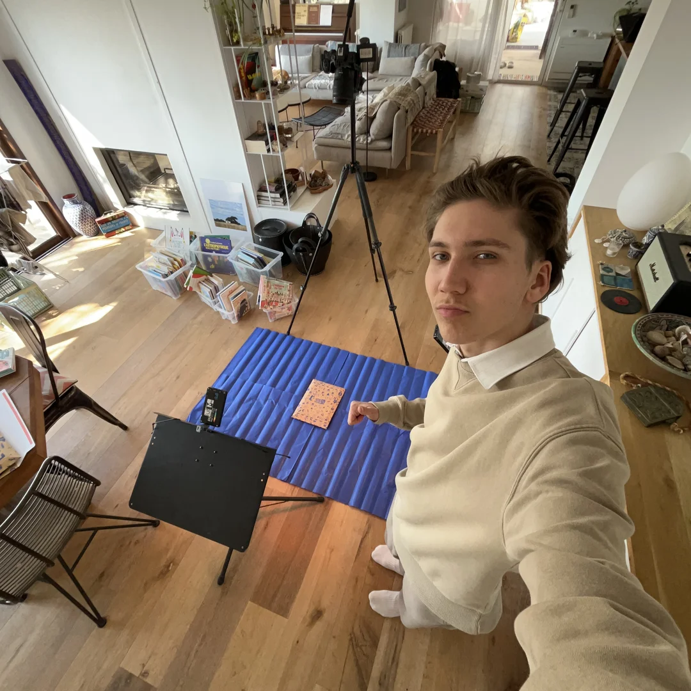

Présentation & Mon rôle
Animations image
par image.
Pour diversifier les contenus visuels de BookiBox et apporter une touche de dynamisme originale, nous avons conçu une série de vidéos en stop motion mettant en scène la box et les livres. Ce projet a fait l'objet d'un véritable travail d'équipe avec Samuel. Ensemble, nous avons brainstormé pour imaginer des mises en scène créatives et des mouvements fluides : des livres qui sortent d'eux-mêmes de la boîte, des rotations dynamiques au sol ou des animations rythmées. Pour le shooting, nous avons exploité le rendu chaleureux de son parquet en bois comme arrière-plan. Après avoir débuté seul sur le projet, Samuel est venu me prêter main-forte pour optimiser la production : tandis qu'il se chargeait de déplacer minutieusement les objets millimètre par millimètre entre chaque prise, je gérais la captation technique, le cadrage et le déclenchement pour donner vie à ces animations.
Matériel & aspects techniques
Rigueur technique
image par image.
Sur le plan technique, la réalisation de ces vidéos a demandé une grande rigueur dans la configuration du matériel. J'ai utilisé le boîtier hybride Canon R7 fixé sur un trépied lesté pour garantir une stabilité absolue et éviter tout micro-déplacement entre les images. Lors de mes phases de production en solo, j'ai configuré l'appareil en mode intervallomètre (déclenchement à intervalles réguliers) pour pouvoir manipuler les objets tout en automatisant la prise de vue. La scène était éclairée de manière constante par les projecteurs LED Boling afin d'éviter les variations de lumière d'une image à l'autre. Enfin, j'ai centralisé toute la post-production sur la suite Adobe pour gérer la colorimétrie et le montage final, en calant l'animation sur une cadence spécifique de 14 images par seconde afin d'obtenir cet effet saccadé propre au stop motion, à la fois fluide et percutant.

Résultat